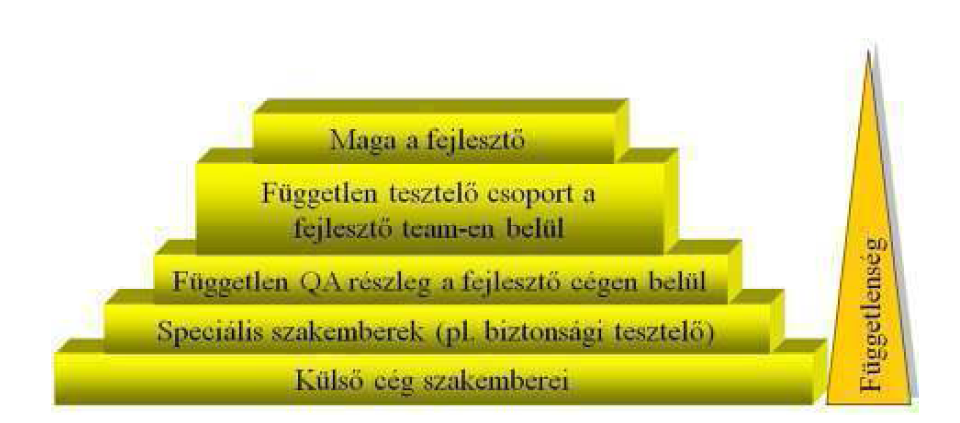

A tesztelési tevékenység a fejlesztési folyamat szerves része. A tesztelés helyét a fejlesztési folyamatban a V modell szemlélteti.
Ebben a fejezetben áttekintést adunk arról, hogy
hogyan kell megszervezni és irányítani a tesztelést,
hogyan illeszthető be a tesztelés a fejlesztési folyamat menedzsmentjébe.
A tesztelésnek a fejlesztési folyamatba illesztése során az alábbi szempontokat kell figyelembe venni.
A tesztelés helye a fejlesztő csoportban
Megvizsgálandók a következő kérdések:
A tesztelők függetlensége. A független tesztelői szervezet hasznai és hátrányai.
A teszteléshez szükséges szerepkörök.
A tesztmérnök (test designer) és a tesztelő (tester) feladatai.
Teszt tervezés
A teszt tervezés szintjei.
A teszt tervezés célja és a teszt specifikáció, teszt terv tartalma az IEEE 829 szabvány szerint.
A teszt előkészítés és a teszt végrehajtás lépései.
A teszt elfogadási kritériumai a tesztelés különböző szintjein.
A tesztfolyamat ellenőrzése és követése
A teszt tervezés és végrehajtás metrikái.
A tesztelési tevékenység előrehaladásának dokumentálása az IEEE 829 szabvány szerint
Konfiguráció menedzsment
Hogyan támogathatja a konfiguráció menedzsment a tesztelési folyamatot.
Kockázatok és a tesztelés
A tesztelés a fejlesztési kockázatok csökkentésének egyik eszköze.
A fejlesztési és a termék kockázat fogalma.
Incidens menedzsment
Az incidens fogalma.
Indicens jelentés és annak tartalma.
A továbbiakban a fenti szempontok közül a legfontosabbakat elemezzük.
A megfelelő tesztelő szervezet felállítása az első lépés egy sikeres tesztfolyamat elvégzéséhez. Fontos, hogy az adott feladathoz legmegfelelőbb szakembereket válogassuk bele a tesztcsapatba. A tesztcsapat összeállítása a teszt tárgyát képező projekttől függ.
Mivel a tesztelés a minőségbiztosítás része, azaz egyfajta értékelés, melynek eredménye nem minden esetben pozitív, ezért fontos lehet egy olyan tesztcsapat összeállítása, amely képes objektíven értékelni a programozók munkáját.
Először a tesztcsapat függetlenségének mértékét kell meghatároznunk. A függetlenség teljes hiánya esetén a tesztelők maguk a programozók, akik a teszteket a programozói csapaton belül végzik el. Következő szint, amikor egy integrált tesztcsapat a programozók mellett dolgozik, továbbra is a programozó team tagjaként, jelentési kötelezettséggel a fejlesztési menedzser felé. Az ezt követő szinten a fejlesztési csapattól független tesztcsapat áll, akik jelentéseiket a projektmenedzsernek írják. A legfelsőbb szint, a teljes függetlenség, ahol a tesztelési feladatokat végző különálló tesztcsapat, aki ugyanannak a szervezeti szintnek készíti a jelentéseket, mint a fejlesztési team. A tesztelő csapat függetlenségi szintjeit foglalja össze az alábbi ábra:

8. ábra A tesztelő függetlensége
A különböző területi szakértők (mint például az üzleti szakértők, technológiai szakértők, tesztautomatizálási szakértők, biztonsági tesztelők, tanúsítványtesztelők) külön független tesztcsapatokat is alkothatnak a szervezeten belül, vagy egy külön szerződtetett tesztcsapat csoportjaiként.
Egy független tesztelő több más jellegű hibát vehet észre, mint aki a programozókkal együtt dolgozik, vagy maga is programozó, mivel más rálátása lehet a projektre, illetve észrevehet olyan problémákat is, amik a fejlesztő csapat gondolkodásmódjából erednek. Valamint egy független tesztelő, aki a vezetői menedzsernek írja jelentéseit, őszinte tud maradni, hiszen nem kell annak negatív következményeivel számolnia, hogy munkatársait bírálja, vagy menedzsere munkájának hibáira mutat rá. Egy független tesztcsapat rendelkezhet elkülönített költségvetéssel és vezetéssel, így annak tagjai is nagyobb eséllyel pályázhatnak majd jobb munkahelyi pozíciókra, hiszen nincsenek a programozók alá vagy mellé rendelve.
A független tesztcsapat hátránya lehet viszont a projekttől vagy annak részeitől való elszigetelődés. Ha a tesztelő ismeri az adott programozók általános gondolkodásmódját, nagyobb eséllyel fedezi fel annak hibáit. Rosszabb esetekben előfordulhat az is, hogy a projektet nem teljesen ismerve túlzott figyelmet szentelnek annak bizonyos részegységei hibáinak feltárására, így más jellegűeket elhanyagolhatnak. Ez a kommunikációs probléma ellenszenvhez, elidegenedéshez, vádaskodáshoz vezethet.
A jól integrált csapatok is szembesülhetnek hasonló problémákkal, például a tesztelők joggal vagy jogtalanul, de gondolhatják, hogy alá vannak rendelve a programozói teamnek, a projekt többi résztvevője gondolhatja úgy, hogy a tesztelés lassítja a projekt előre menetelét, és a tesztcsapat miatt késnek a határidőkkel. A programozók feleslegesnek tarthatják kódjaik ellenőrzését, hiszen úgyis van saját tesztcsapatuk.
Gyakori eset, hogy a vállalatok vágyva a független tesztelés előnyeire csak azért hoznak létre ilyen csapatokat, hogy hogy hamarosan feloszlassák őket. Oka, lehet, hogy a tesztmenedzser sikertelen a fenti problémák hatékony kezelésében.
A tesztelés függetlenségének megállapításához tehát nem létezik egyedüli helyes út. Minden egyes projekthez, a projekt alkalmazási területét, kockázatszintjét, komplexitását figyelembe véve kell döntenünk. Lehetséges természetesen a projekt előrehaladásával annak különböző szintjein változtatnunk a tesztcsapat függetlenségén és összetételén. Vannak tesztek, amiket célszerűbb, a mások végeznek el, más területek szakértői a projekt tárgyától függően.